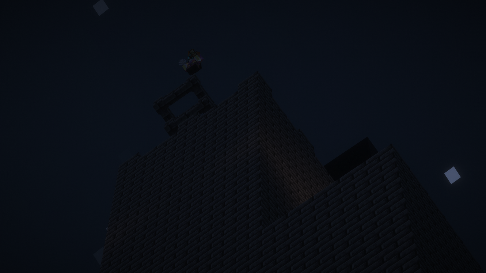
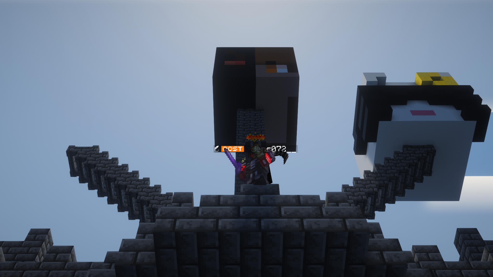
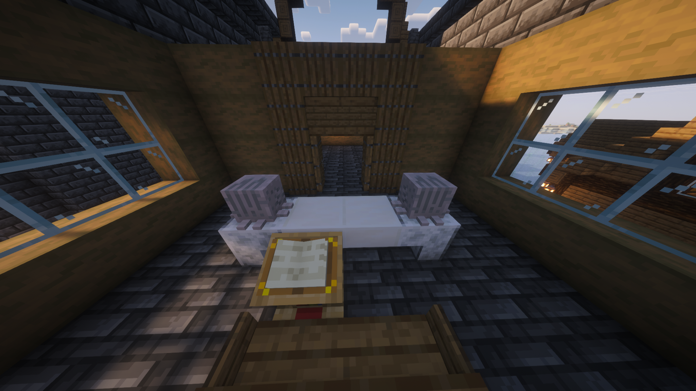
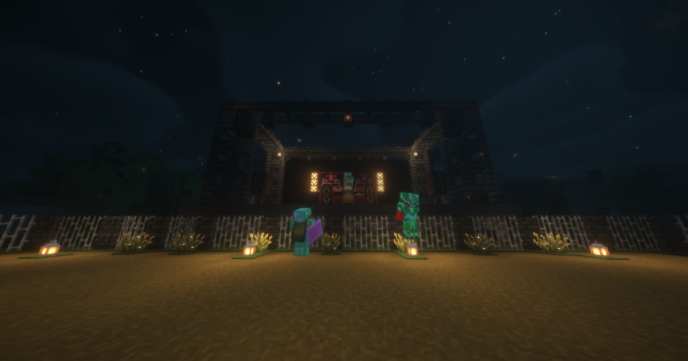

Het nieuws uit Oost & omstreken
De Oostelijke Krant
Nether open, sprongen en verlies in Oost
22-02-2026 · Locaties: Oost, Spawn, Nether · Dossier: groei, risico en rouw
Oost beleefde vandaag een volledige omslagdag. De server ging een nieuwe fase in met de officiële opening van de Nether, de eerste full netherite-uitrusting werd publiek getoond, het pershuis ging zichtbaar een stap vooruit met een nieuw kantoor in aanbouw en tegelijk werd de gemeenschap geraakt door het verlies van ShewinB na een conflict bij de spawn. Deze editie bundelt alle gebeurtenissen in één chronologisch en inhoudelijk overzicht.
Wiardi's sprong: pure durf, nul marge
Volgens meerdere getuigen zette Wiardi een sprong in van ongeveer 1000 blokken hoogte. Waar de meeste spelers in zo'n situatie een veilige route kiezen, koos hij voor een directe val en een wind charge clutch op het laatste moment. De timing moest perfect zijn: te vroeg en hij verliest controle, te laat en het is direct einde verhaal.
Op papier lijkt dit één stunt. In praktijk laat het iets groters zien: het niveau van risico dat spelers inmiddels durven te nemen om zich te onderscheiden in een steeds hardere servermeta. De redactie keek toe, noteerde, en gaf eerlijk toe dat niemand van de krant deze sprong zelf aandurfde.
In jongerentaal werd dat op de server hardop samengevat als: de krant was een zogeheten 'Pussy'. Vrij vertaald voor het archief: wij hielden de pen vast, Wiardi hield de zenuwen vast.

Jens072__ als eerste met full netherite + trim
Jens072__ is de eerste speler van de SMP met een complete netherite-set: armor, tools en armor trim inbegrepen. Het gaat hier niet alleen om prestige, maar om directe strategische waarde. Een speler met deze uitrusting bepaalt vaker het tempo in gevechten, routes en onderhandelingen.
Tijdens een bezoek aan de krant liet hij zijn volledige aanwinst zien. Op meerdere plekken werd dit direct besproken als startsein van een nieuwe wapenwedloop: wie blijft achter in diamant, en wie sprint door naar netherite voordat allianties zich verharden?

Pershuis in aanbouw: redactie kiest voor schaalvergroting
Terwijl de server militair en economisch verschuift, bouwt de krant operationeel door. Het pershuis kreeg vandaag een nieuwe uitbreiding in de vorm van een kantoor in aanbouw. Met hulp van meerdere oostelingen werd de structuur zichtbaar groter en praktischer ingericht.
De uitbreiding is meer dan cosmetisch. Een groter pershuis betekent dat verslaglegging, opslag van dossiers en redactiewerk robuuster kunnen draaien op dagen met veel incidenten. In een server waar gebeurtenissen per uur kunnen escaleren, is infrastructuur zelf een strategische keuze.

Tragisch dossier: ShewinB overleden na ingrijpen bij grief
De zwaarste gebeurtenis van de dag kwam vanuit de spawn van OOST. Volgens meldingen was MauritsHOI bezig met het griefen van gebouwen in het gebied. ShewinB besloot in te grijpen, sprak hem daarop aan en belandde kort daarna in een direct gevecht.
Dat gevecht liep fataal af voor ShewinB. Met zijn overlijden verliest Oost niet alleen een speler, maar ook een zichtbaar gezicht binnen de regio. Zijn podium blijft staan als tastbare herinnering aan zijn aanwezigheid en aan wat deze dag heeft gekost.

Analyse: waarom 22-02-2026 een kantelpunt is
Deze dag combineerde drie lijnen die zelden tegelijk zo hard zichtbaar zijn: technologische sprong (Nether + netherite), institutionele groei (pershuis-uitbreiding) en sociale frictie (spawnconflict met dodelijke afloop). Juist die combinatie maakt dit een kantelpunt.
De verwachting is dat de komende edities steeds meer gaan draaien om voorbereiding: wie heeft toegang tot netherite, wie beschermt zijn bouwzones, wie houdt informatiekanalen open en wie verliest grip onder druk. Oost staat nog overeind, maar de marges zijn kleiner dan vorige week.
Slotwoord voor ShewinB
Tot slot wil De Oostelijke Krant een dankwoord schrijven aan ShewinB: een grote vriend van de krant en van